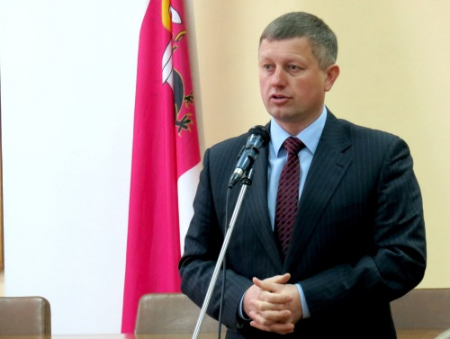

Відповідно до плану-графіка навчання кадрів на 2017 рік, затвердженого спільним розпорядженням голови обласної державної адміністрації та голови обласної ради від 13 грудня 2016 року № 89, у Чернігівському центрі перепідготовки та підвищення кваліфікації працівників органів державної влади, органів місцевого самоврядування, державних підприємств, установ і організацій 06 квітня 2017 року проводився тематичний короткотерміновий семінар «Правові та організаційні засади співробітництва територіальних громад (міжмуніципальне співробітництво)» для голів територіальних громад. Участь у семінарі взяв голова Ніжинської районної ради Олег Бузун, який у ході зустрічі висвітлив тему «Реалізація європейських проектів на Ніжинщині: досвід та перспективи».
Як відомо, кожен рік по Україні, особливо у період літньої засухи, надходить інформація про пожежі на осушених болотах. Пожежі, що виникли в лісах, як правило, завжди супроводжуються загоранням торфяних родючих грунтів низинних боліт. Такі явища мали місце й у с.Кукшин Ніжинського району ще у 2010 р., окремими частинами тоді горіло близько 15 гектарів землі. Тому за для припинення пожеж на торфовищах осушувальної системи «Смолянка», що приносять як матеріальні, так і екологічні збитки, залучено Проект Європейської комісії – Програми розвитку ООН Clima East: «Збереження та стале використання торфовищ», який на території України діє лише в Ніжинському районі. Завдяки проекту в районі створено "Регіональний ландшафтний парк "Ніжинський”, відновлено природний гідрологічний режим торфовищ осушувальної системи «Смолянка», йде постійна підтримка шкіл із створенням екологічних класів, встановлення твердопаливних котлів, відкриття географічного майданчика, проведення акцій екологічного спрямування «Чиста країна» та функціонує молочний кооперативів у Кукшині.